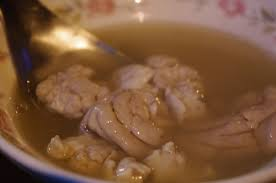
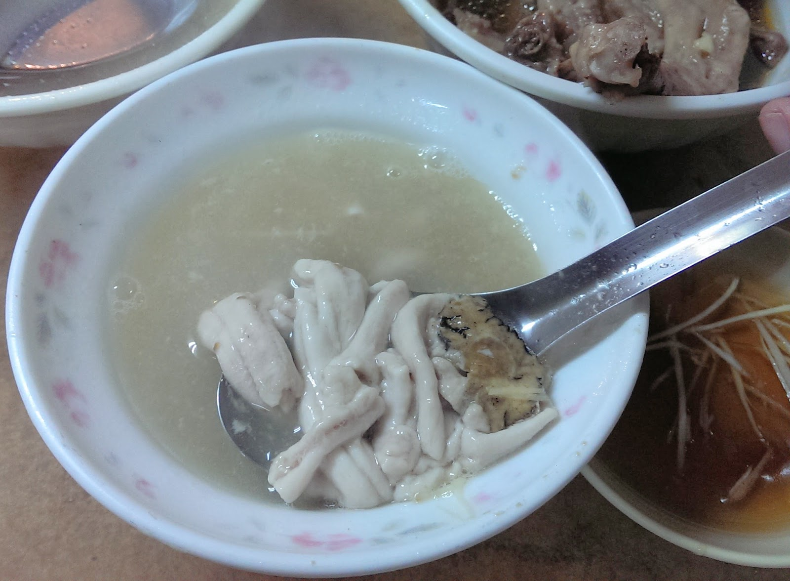
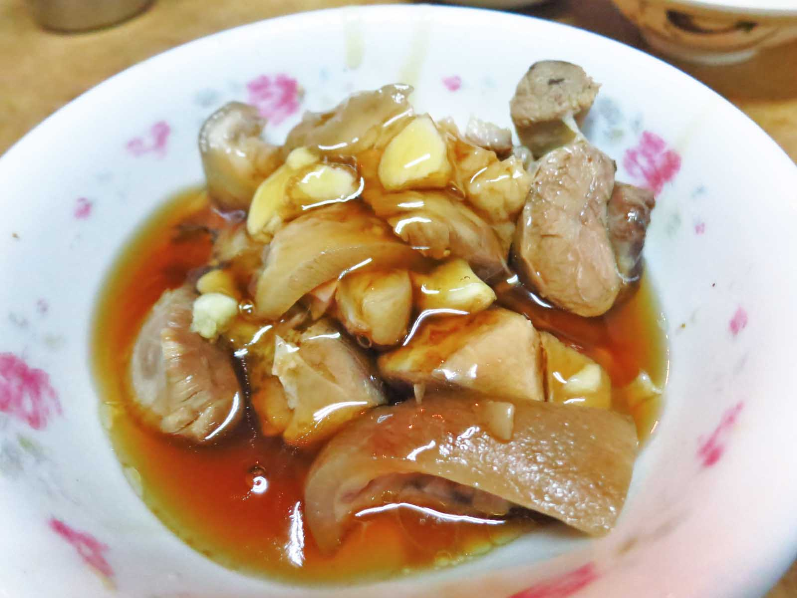
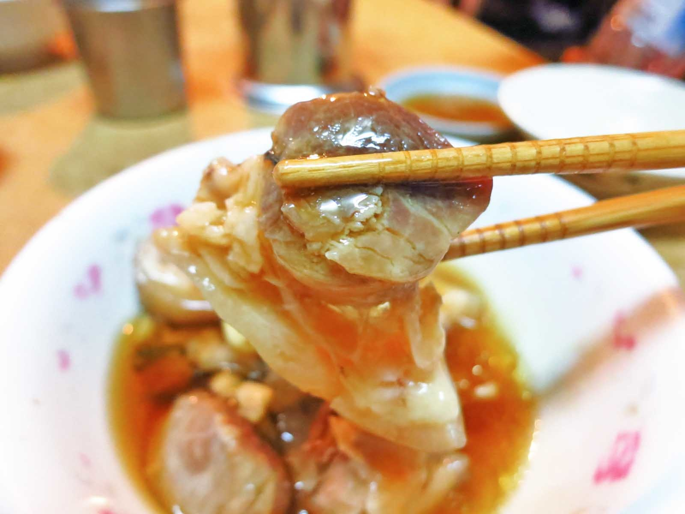
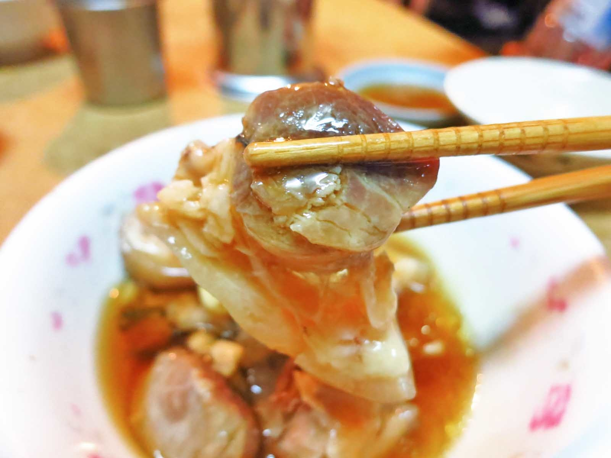
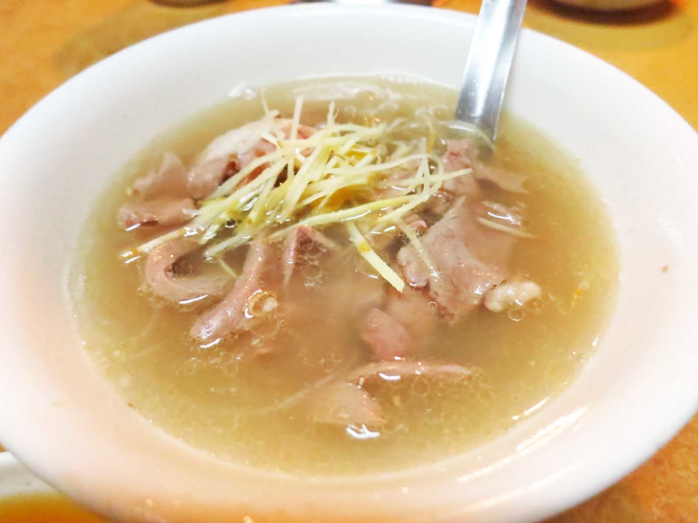

說實在的，第一次吃還真的不太敢吃，它的口感非常的軟嫩滑口，完全沒有腥味，再佐以淡淡的中藥香，更令人回味。而且吃起來還真的有一種在吃腦的奇妙感覺，不過如果撇掉這些感覺，其實個人覺得這個是非常值得嘗試的
其實我覺得豬骨髓的味道，就像是融合了濃厚大骨味的豆腐，好吃在於味道濃厚而無腥味，而且阿明豬心的豬骨髓湯還帶著淡淡黃耆的味道，錯過可惜
這裡的豬腳吃起來軟軟的，不過我覺得最厲害的是他們的醬油，稠稠的帶有甘甜的感覺，但唯一的缺點是他的蒜頭味道沒有融入醬油，兩個完全是分開的，所以建議還是搭配豬腳一起吃，如此才有「蒜頭豬腳」的感覺
 

他們的湯頭味道還不錯，但湯不是重點，重點就是在他們的豬心，他們的豬心是現點現切現煮的，豬心的口感非常份量真的很少~
想了解更多台南美食，請洽台南人或電免付費電話7087-184-488(請你放心-一輩子-吃飽飽)